06 · Hardware-Beschleunigung (DMA)
Mikrocomputertechnik 3 · Daten bewegen, Puffer sicher übergeben
Prof. Dr.-Ing. Daniel Klünder
Vom Datenprotokoll zur Datenbewegung
- Vorlesung 5: vollständige Transfers und gültige Sensorwerte
- Heute: Daten zwischen Speicher und Peripherie bewegen lassen
- DMA übernimmt Kopierarbeit, nicht die Bedeutung der Daten
- Vorbereitung, Besitz und Abschluss bleiben Softwareaufgaben
Voraussetzungen und Lehrmodell
- C-Integer, Arrays und Gerätezugriffe
- Cache und Write-Back aus Vorlesung 2
- Interrupts, Fristen und gemeinsame Zustände aus Vorlesung 3
- Serielle Rahmen und Quittungen aus Vorlesung 5
- DMA-Funktionen sind Plattformmerkmale, kein RISC-V-Registerstandard
Vier Schulstunden: Ablauf
| 1 |
Bedarf, CPU-Aufwand und Datenpfad: 35 min |
Aufgabe 1: 10 min |
| 2 |
Transferauftrag und Lebenszyklus: 30 min |
Aufgaben 2–3: 15 min |
| 3 |
Cache und Busübertragung: 30 min |
Aufgabe 4: 15 min |
| 4 |
Streams und Anwendungen: 15 min |
Aufgaben 5–6: 15 min; Quiz: 15 min |
Drei Budgets getrennt prüfen
| Leitungsbandbreite |
Wie viele Nutzdaten passen durch das Protokoll? |
| CPU-Aufwand |
Wie viele Takte kostet die Bedienung? |
| Speicher und Bus |
Wann bekommt ein Transfer seine Zugriffe? |
Eine Verbesserung eines Budgets erfüllt die anderen nicht automatisch.
Wie groß ist ein Vollbild?
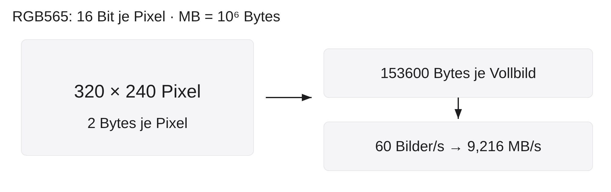
RGB565: \(5+6+5=16\) Bit, hier \(2\) Byte je Pixel.
\[
B_{\mathrm{Bild}}=320\cdot240\cdot2=153600\ \mathrm{Byte}
\]
DMA hebt die Leitungsgrenze nicht auf
SPI-Lehrmodell: ein Bit je SCK-Takt, keine Pausen.
| \(10\) MHz |
\(1{,}25\) MB/s |
\(\approx8{,}14\) |
| \(50\) MHz |
\(6{,}25\) MB/s |
\(\approx40{,}69\) |
Für \(60\) Vollbilder/s wären allein \(73{,}728\) Mbit/s Nutzdaten nötig.
Polling beschäftigt den Aufruf
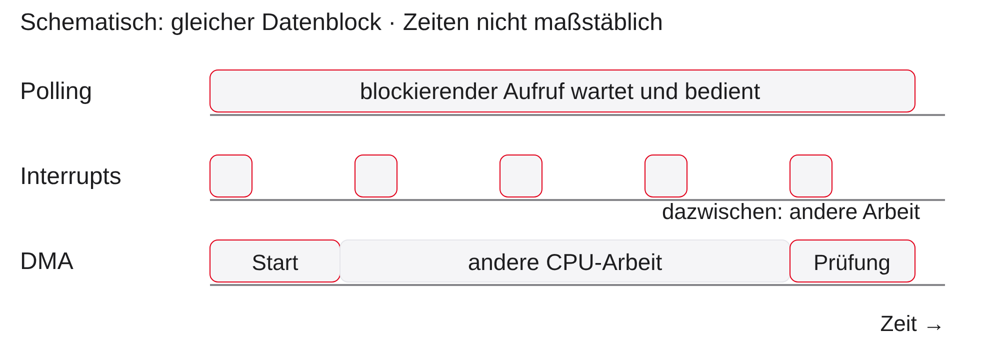
Blockierendes Polling wartet; aktivierte Interrupts können trotzdem laufen.
Interruptaufwand hat eine Obergrenze
Lehrannahmen: CPU \(100\) MHz, \(150\) feste Takte je Interrupt. SPI \(10\) MHz liefert ideal \(1{,}25\) Millionen Byte/s.
| \(1\) |
\(1250000\) |
\(187{,}5\,\%\) |
| \(16\) |
\(78125\) |
\(\approx11{,}72\,\%\) |
Zusätzliche Kopier- und Anwendungsarbeit ist noch nicht enthalten.
DMA verändert den Kopierpfad
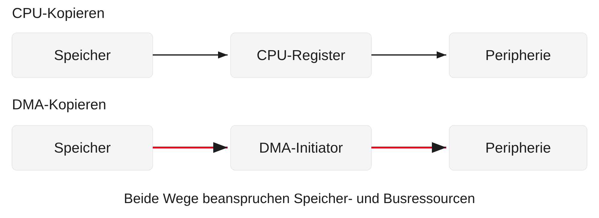
DMA: Direct Memory Access; DMAC: Direct Memory Access Controller.
Kopieren ist keine Interpretation
- DMAC bewegt vorgegebene Elemente
- Registerzugriff und Nutzdatenbedeutung sind verschiedene Ebenen
- Vorzeichen, Skalierung und Plausibilität bleiben Anwendungsschritte
- Zusätzliche Rechenfunktionen wären eigene Hardwaremerkmale
Initiatoren treffen auf einen Arbiter
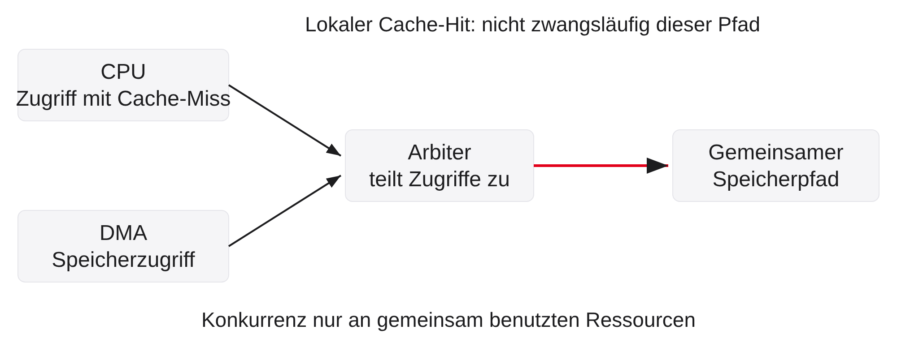
Bus-Mastering: einen Zugriff selbst anfordern und organisieren.
Kanalpriorität ist nicht Buspriorität
- Mehrere DMA-Kanäle besitzen getrennte Aufträge
- Eine Request-Zuordnung verbindet Peripherie und Kanal
- Der interne Entscheider wählt zwischen Kanalaufträgen
- Der Systembus entscheidet zusätzlich zwischen Initiatoren
Cycle Stealing betrifft Konkurrenz
- DMA belegt zeitweise eine gemeinsam genutzte Ressource
- Ein konkurrierender CPU-Zugriff kann warten
- Ein lokaler Cache-Hit muss dadurch nicht stoppen
- Burstlänge und Zuteilungspolitik beeinflussen Wartezeiten
Request ist nicht die Busquittung
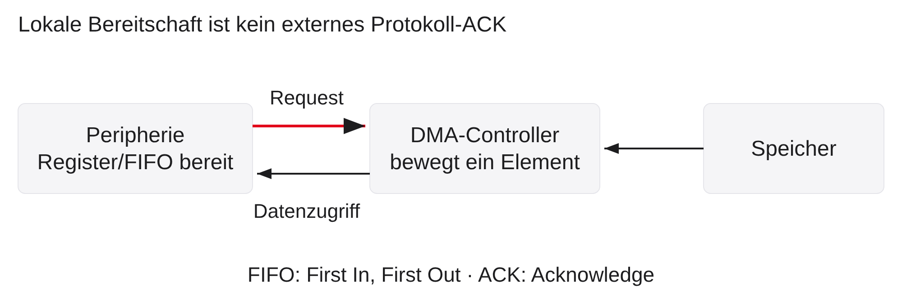
Lokale Registerbereitschaft und externe Protokollbestätigung trennen.
Senden: Quelle wandert, Ziel bleibt
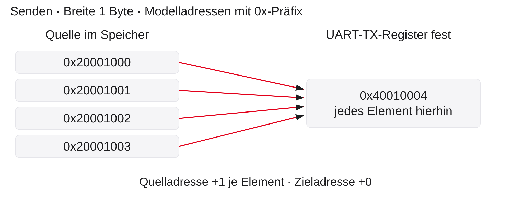
Lehrmodell: ein Byte je Element, Quelle 0x20001000, festes Ziel 0x40010004.
Empfangen: Register fest, Array wächst
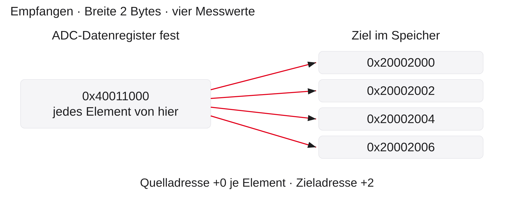
Lehrmodell: \(16\) Bit je Element; Quelladresse konstant.
Speicher zu Speicher
- Beide Seiten können im Modell inkrementieren
- Quelle und Ziel müssen erreichbar und passend ausgerichtet sein
- Hardwareunterstützung ist nicht für jeden Kanal selbstverständlich
- Überlappende Bereiche brauchen eine ausdrücklich geeignete Kopierregel
Breite und Anzahl bestimmen Bytes
Gleiche Quell- und Zielbreite \(w\) im Lehrmodell:
\[
B=Nw
\]
| \(8\) |
\(1\) Byte |
\(8\) |
| \(8\) |
\(2\) Byte |
\(16\) |
| \(8\) |
\(4\) Byte |
\(32\) |
Ein Zähler für Elemente ist kein universeller Bytezähler.
Ein Zählerlimit verlangt mehrere Blöcke
Lehrlimit: maximal \(L=65535\) Elemente je Normalauftrag.
Bei \(1000000\) Byte und Ein-Byte-Elementen:
\[
K=\left\lceil\frac{1000000}{65535}\right\rceil=16
\]
\[
1000000=15\cdot65535+16975
\]
COUNT = 0 ist kein universelles Rezept für einen leeren Hardwareauftrag.
Den nächsten Block berechnen
Reine C-Funktion:
uint16_t next_block(uint32_t remaining, uint16_t limit) {
if (remaining < limit)
return (uint16_t)remaining;
return limit;
}
Bei Limit \(65535\): erst volle Blöcke, zuletzt \(16975\) Elemente.
Ausrichtung ist eine eigene Anforderung
- Vier-Byte-Elemente: im Modell Startadresse durch \(4\) teilbar
0x20001000 passt, 0x20001001 nicht- Gerätezugriffsbreite und Puffergröße ebenfalls prüfen
- Cachezeilen-Ausrichtung kann zusätzlich strenger sein
CPU-Zeiger und Geräteadresse
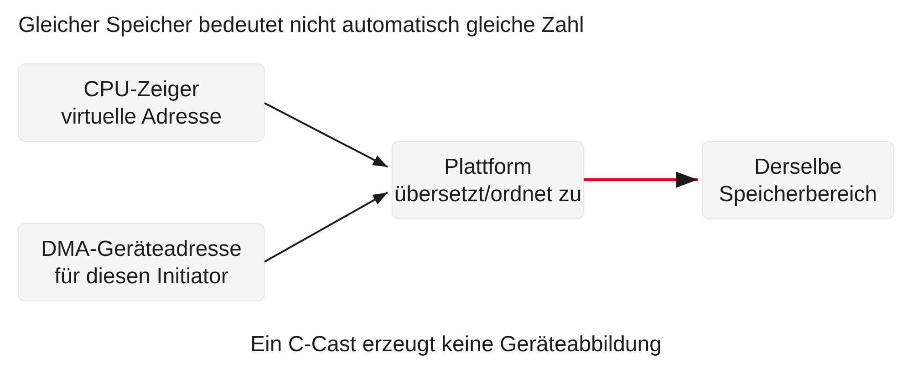
Ein Cast nach uint32_t erzeugt keine geprüfte DMA-Abbildung.
Pufferbesitz hat einen Lebenszyklus
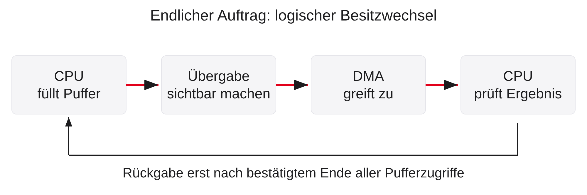
Asynchrone Rückkehr ist keine Freigabe des Puffers.
Vorbereiten, dann freigeben
Konzeptionelle Startfolge:
- Kanal stillsetzen und dokumentierten Ruhezustand bestätigen
- Puffer, Adressen, Breiten und Request-Zuordnung prüfen
- Quelle, Ziel, Anzahl und Modi einstellen
- Alte Statusmeldungen passend behandeln; Sichtbarkeit herstellen
- Erst danach Kanal und Request-Pfad freigeben
Eine Meldung ist noch kein Gesamterfolg
| HT |
erste Hälfte erreicht |
| TC |
Normalauftrag nach DMA-Regeln beendet |
| TE |
Transferfehler |
Richtung, Betriebsart und Gerätestatus bestimmen die weitere Freigabe.
DMA-Abschluss und Leitungsende
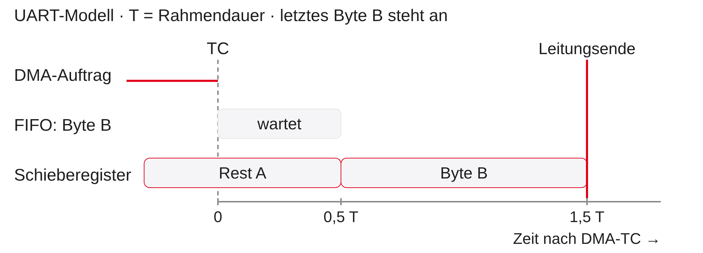
Endlicher Normalauftrag: Pufferfreigabe und externe Leitungsfreigabe getrennt prüfen.
Das Protokoll bleibt zuständig
- SPI: Auswahlrahmen und Leitungsabschluss beachten
- I²C: Adressen, Quittungen und abschließenden NACK nicht ersetzen
- UART: Rahmenbildung bleibt Aufgabe der Peripherie
- DMA-Erfolg prüft keine beliebige Nutzdatenplausibilität
Fehler und Timeout richtig behandeln
- Fehlerstatus und bereits übertragenen Anteil erfassen
- Weiteren Zugriff dokumentiert beenden
- Vor Pufferfreigabe Stillstand beziehungsweise Besitzrückgabe bestätigen
- Unvollständige Empfangsdaten nicht als neuen Datensatz ausgeben
MiB, MB und CPU-Zeit trennen
SPI \(10\) MHz, ein Bit je Takt, keine Pausen:
\[
1\ \mathrm{MiB}=1048576\ \mathrm{Byte},\qquad
T_{\min}=\frac{8\cdot1048576}{10^7}\approx0{,}838861\ \mathrm{s}
\]
Dezimal \(1\) MB braucht ideal \(0{,}8\) s.
DMA spart Kopierbedienung; Setup, Abschluss und Buskonkurrenz bleiben.
Nicht kohärent: zwei Sichten auf Daten
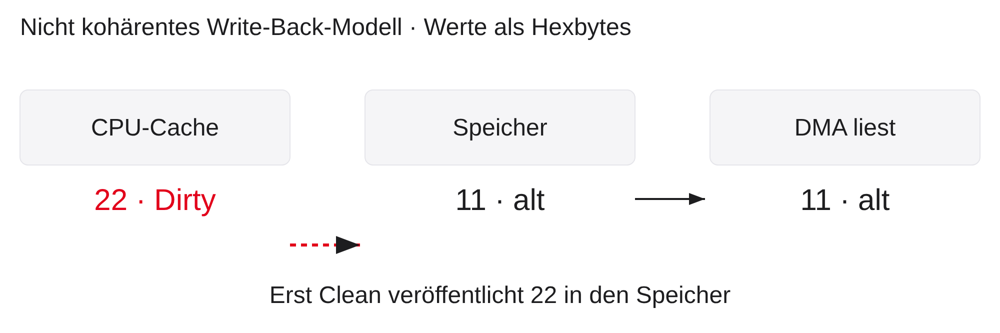
Voraussetzung hier: privater Write-Back-Cache ohne automatische DMA-Kohärenz.
Senden: veröffentlichen, dann einfrieren
- Neue Daten im CPU-Puffer vollständig vorbereiten
- Nicht kohärentes Modell: relevante Dirty-Zeilen nach unten schreiben
- Plattformregel für Sichtbarkeit und Reihenfolge erfüllen
- Quelle bis zur dokumentierten DMA-Freigabe unverändert lassen
Empfang: Dirty-Daten können zurückschlagen
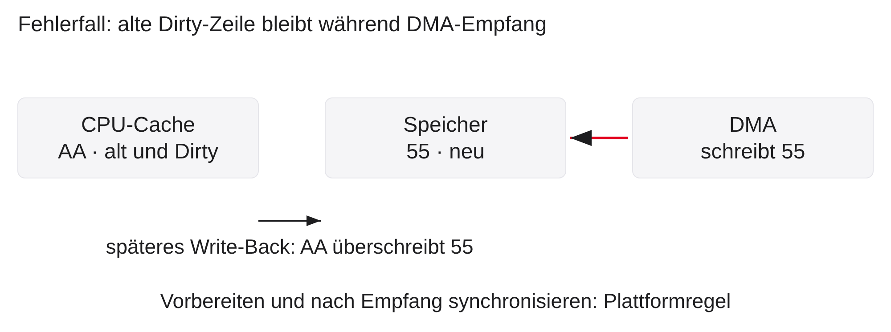
Vor Übergabe vorbereiten; nach erfolgreichem Empfang für CPU-Lesen synchronisieren.
Clean, Invalidate und Reihenfolge
| Clean |
Dirty-Inhalt nach unten schreiben |
| Invalidate |
lokale Kopie ungültig machen |
| Ordnungsbarriere |
erforderliche Zugriffsreihenfolge sichern |
Eine Barriere ist kein universeller Cache-Flush und keine Pufferbesitzrückgabe.
Die Cachezeile ist größer als der Puffer
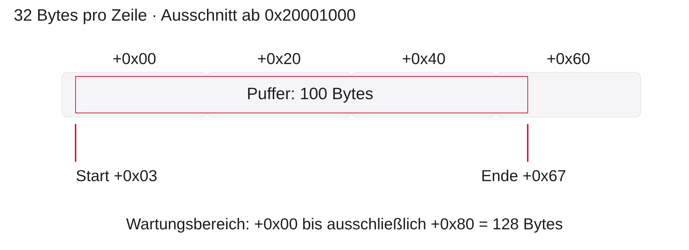
Lehrmodell: \(32\) Byte je Zeile.
0x20001003 plus \(100\) Byte berührt \(128\) Byte Cachebereich.
Ein exklusives Ende aufrunden
C-Rechenmodell für \(32\)-Byte-Zeilen:
uint64_t covered_end(uint32_t start, uint32_t bytes) {
uint64_t end = (uint64_t)start + bytes;
return (end + 31u) & ~UINT64_C(31);
}
Vorbedingungen für Nutzung: positive Länge, gültiger ursprünglicher Adressbereich.
Kohärent, ungecacht und erreichbar
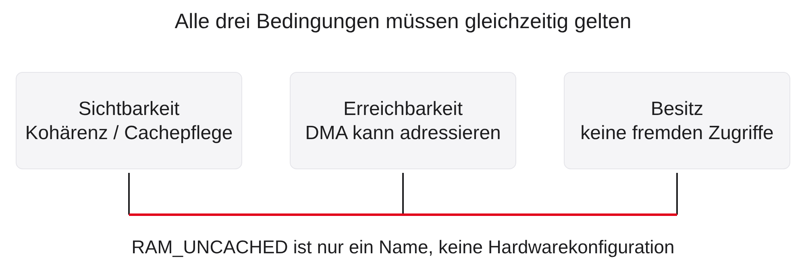
Ein Abschnittsname im Linkerskript macht Speicher nicht automatisch ungecacht.
Ein Burst spart nicht jede Wartezeit
Lehrmodell für \(16\) Word-Elemente, je Read und Write ein Zyklus, Zuteilung zwei Zyklen:
\[
C_{\mathrm{single}}=16(2+1+1)=64
\]
\[
C_{\mathrm{burst}}=2+16(1+1)=34
\]
Längere zusammenhängende Belegung kann andere Initiatoren länger warten lassen.
Ein FIFO verbindet unterschiedliche Tempi
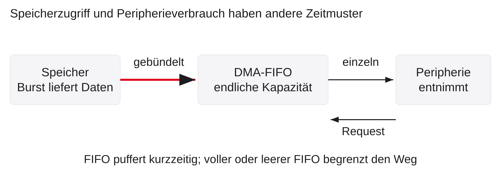
Ein Zwischenpuffer entkoppelt Schritte, erzeugt aber keine unbegrenzte Bandbreite.
Deskriptoren verketten Aufträge
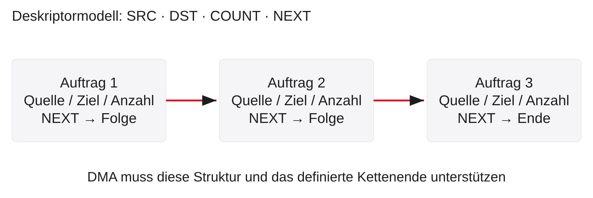
Scatter-Gather benötigt ausdrückliche Hardwareunterstützung.
Ein Rechteck ist nicht linear gepackt
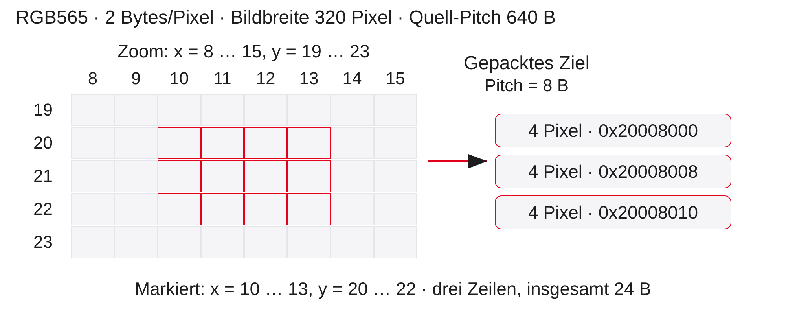
Quelle: Start 0x20004214, Pitch \(640\) Byte, Zeileninhalt \(8\) Byte.
Circular Mode wiederholt Adressen
- Ein endlicher Puffer wird im Kreis genutzt
- Im Lehrmodell laden Zähler und Adresse nach \(N\) Elementen neu
- Nachschub oder Verarbeitung bleibt Softwarearbeit
- Ein Umlauf erzeugt nicht automatisch neue gültige Inhalte
Gleiche Ringposition, anderer Rückstand
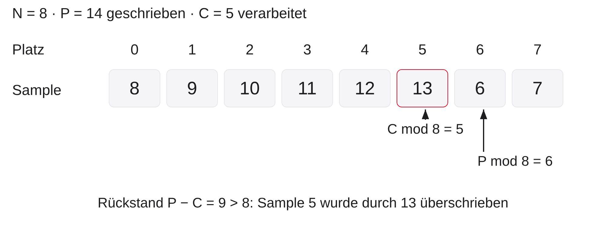
\[
N=8,\quad P=14,\quad C=5,\quad P-C=9>N
\]
Ping-Pong: zwei Bereiche mit Rollen
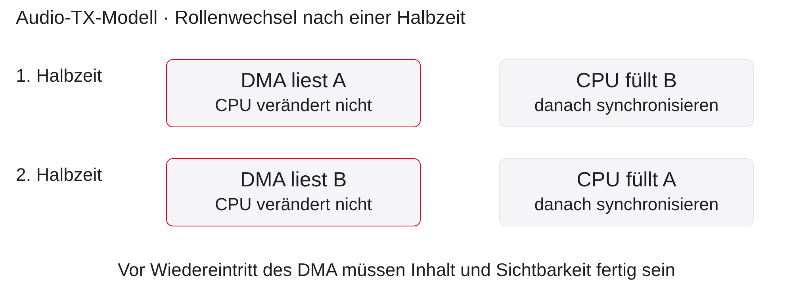
Getrennte Speicherbereiche verhindern den Konflikt nur bei rechtzeitigem Besitzwechsel.
Ein Nachfüllfenster berechnen
Audio-Lehrmodell: mono, \(16\) Bit, \(44100\) Samples/s, \(2048\) Byte je Hälfte.
\[
T_H=\frac{2048/2}{44100}\approx23{,}22\ \mathrm{ms}
\]
Latenz \(3\) ms + Nachfüllen \(18\) ms + Synchronisation \(1\) ms \(=22\) ms; Reserve ungefähr \(1{,}22\) ms.
Ein spätes Flag macht keine Hälfte frei
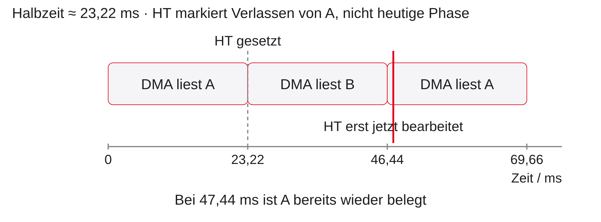
ISR meldet kurz; Anwendung prüft aktuelle Phase und verbleibendes Budget.
Ein Timeout gibt den Puffer nicht zurück
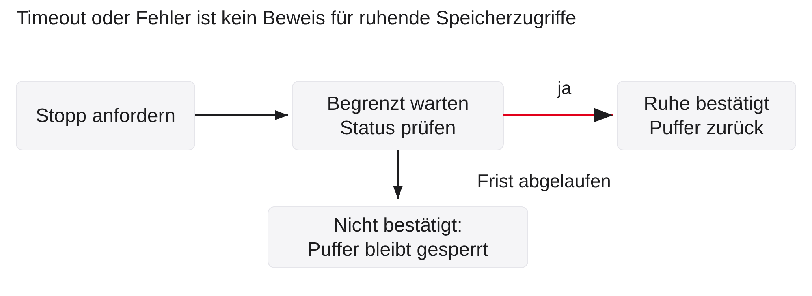
Erst bestätigter Stillstand beziehungsweise dokumentierte Besitzrückgabe erlaubt Wiederverwendung.
DMA aus dem Bedarf auswählen
| wenige Sensorbytes |
Aufwand, Frist und Fehlerreaktion |
| großes Display-Vollbild |
CPU-Bedienung und Leitungsbandbreite |
| kontinuierlicher Audiostrom |
Halbzeit, Nachschub und Besitzwechsel |
| mehrere Speicherblöcke |
Erreichbarkeit und Auftragsorganisation |
Wenig Daten verbieten DMA nicht; viel Daten garantieren keinen ausreichenden Ausgang.
Rechenmodell und Geräteausführung
- Host-C: Blockgröße und Cachebereichsgeometrie
- Papier: Adressfolgen, Bandbreiten, Besitz und Zeitfenster
- Renode: konkrete unterstützte Plattform und Controller nötig
- Keine Registeradressen oder erfolgreichen Hardwareläufe aus einem Schema ableiten
Abschlussquiz: Grenzen begründen
- Zehn QuizAcademy-Fragen zu Vorlesung 6
- Zehn Minuten beantworten, fünf Minuten auswerten
- Bytezahl, Beobachter oder Pufferphase nennen
- Antwortlänge liefert keinen zuverlässigen Hinweis
Was Sie jetzt unterscheiden können
- Kopierarbeit, Leitungsrate und Buskonkurrenz
- Elemente, Bytes, Adresssicht und Lebensdauer
- Clean, Invalidate, Reihenfolge und Pufferbesitz
- Normalabschluss, Umlauf und externe Ausgabe
- Aktuelle Phase und bloße Statusmeldung